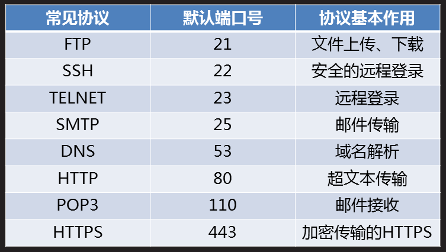
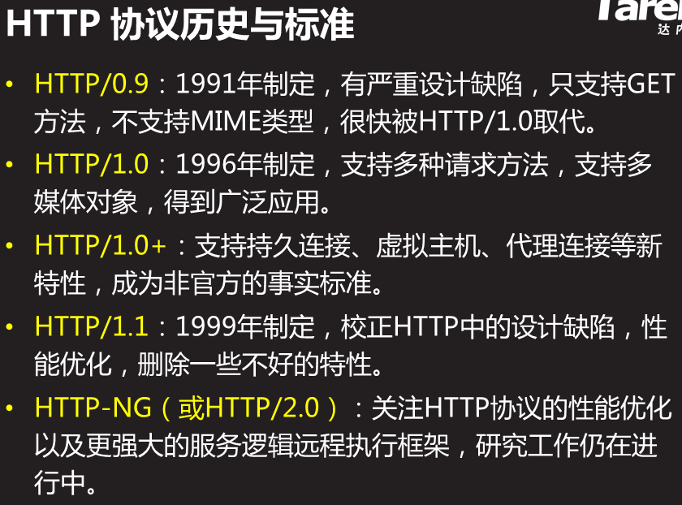
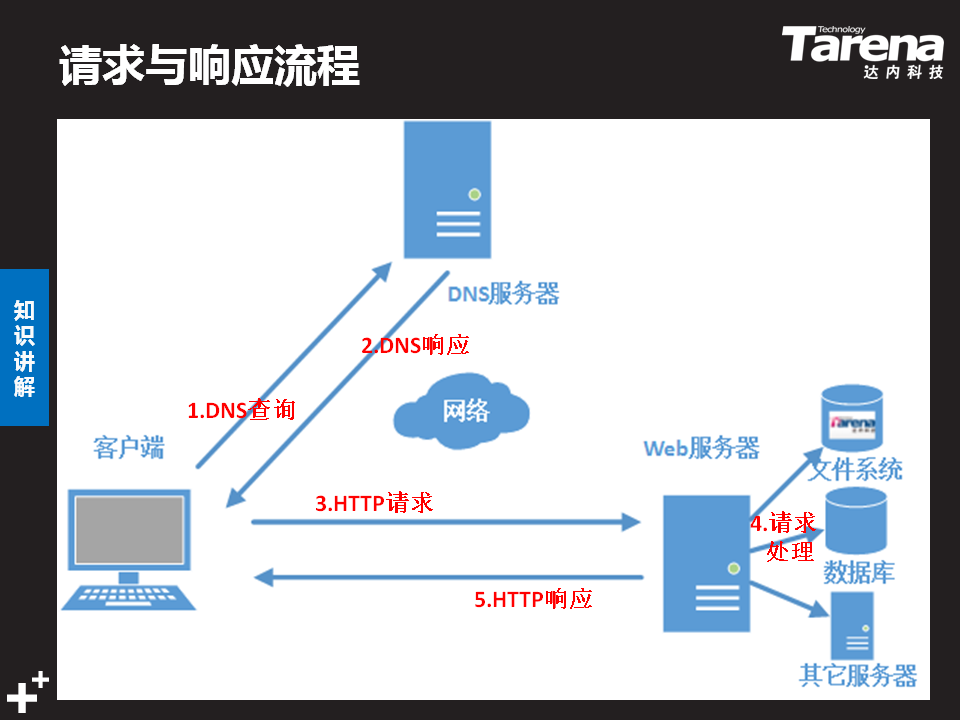
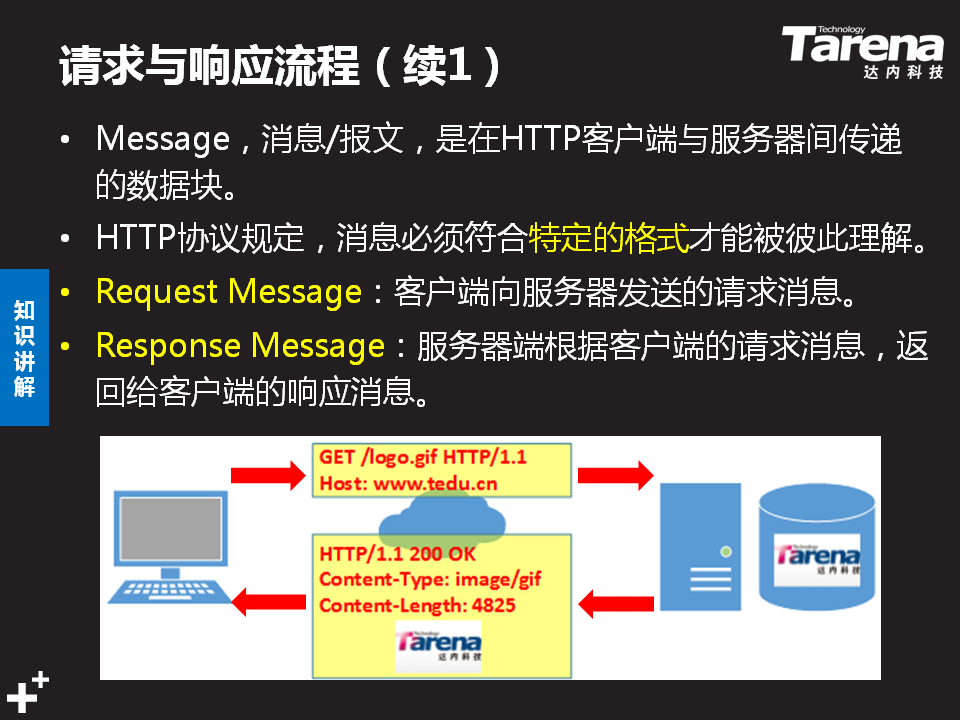
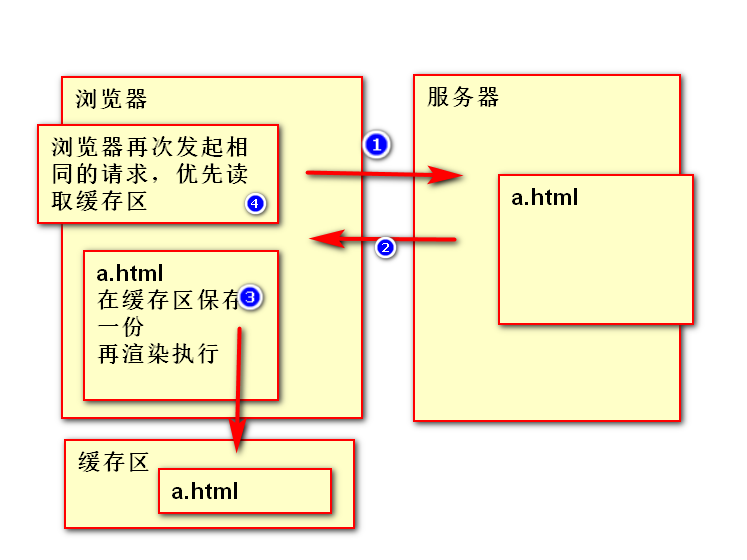
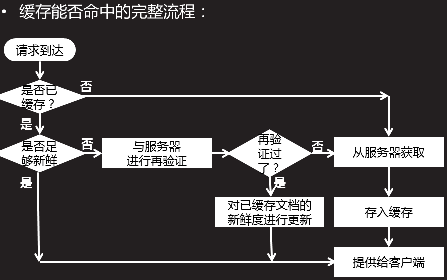

URL
URL结构: 协议+主机名称+目录结构+文件名称 URL完整的结构 <scheme>://<user>:<pwd>@<host>:<post>/<path>;<params>?<query>#<frag> <scheme> 方案,协议,以哪种方式获取服务器资源 不区分大小写。常见协议http/https/ftp  <user> 用户名 <pwd> 密码 <host> 主机名称 locallhost 127.0.0.1 域名/ip 地址 <post> 端口号 <path> 路径，资源在服务器上具体存放的位置 <params> 参数 跟踪状态参数cookie/session <query> get方法提交时，查询字符串 #<frag> 锚点 常见协议 默认端口号 协议基本作用 FTP 21 文件上传、下载 DNS 53 域名解析 HTTP 80 超文本传输 HTTPS 443 加密传输的HTTPSHTTP 协议
HTTP HpyerText Transfer Protocol 超文本传输协议 规范了数据是如何打包以及传递的(专门用于html) HTTP协议的历史  web请求原理详解  HTTP 性能优化 HTTP 的连接过程 发送请求-->建立连接-->服务器处理请求-->访问资源-->构建响应-->发送响应-->记录日志 1.HTTP连接性能的优化 1.减少链接创建次数(开启持久连接) 2.减少请求次数 3.提高服务器端运行速度 4.尽可能减少数据的长度 2.安全的HTTP协议 HTTPS：安全版本的http协议 SSL：为数据通信特供安全支持 1.客户端发送请求-->SSL层加密-->服武器接收加密文件-->在SSL层解密，得到请求明文，对请求做处理 2.服务器发送响应-->SSL层加密-->客户端得到加密文件-->在SSL层解密，得到响应明文，解析响应内容消息/报文 Message
请求消息 Request Message (请求起始行，请求头，请求主体) 响应消息 Responce Message (响应起始行，响应头，响应主体)  Request Message 请求消息：客户端向服务器发送的请求消息 由三部分组成:请求起始行，请求头，请求主体 1.请求起始行 1.请求方法 get： 客户端向服务器要数据的时候使用，靠地址栏传递查询的字符串，无请求主体 post： 客户端传递给服务器数据的时候使用，有请求主体，靠请求主体传递数据 delete： 表示客户端要删除服务器的内容(一般禁用) put： 表示客户端想要往服务器上放文件/数据(一般禁用) connect: 测试连接 trace： 追踪请求路径 option： 预请求 head： 表示客户端只获取响应消息头 2.协议版本号 HTTP/1.1 3.请求的url 2.请求头 1.Host: www.tmooc.cn 告诉服务器请求的是哪个主机 2.Connection: keep-alive 告诉服务器开启持久链接 3.User-Agent:Mozilla/5.0 告诉服务器，我现在浏览器的类型和浏览器的版本号 4.Accept-Encoding: gzip 告诉服务器，我这个浏览器能够接受的压缩文件格式 5.Accept-Language: zh-CN 告诉服务器，我能够接收的自然语言类型 6.Referer：引用/推荐人 告诉服务器，这个请求来自于那个网页 3.请求主体 formdata get没有请求主体 post有请求主体 Responce Message 响应消息：服务器发送给客户端的数据块 由三部分组成：响应起始行，响应头，响应主体 1.响应起始行 1.协议版本 HTTP/1.1 2.响应状态码 告诉浏览器，服务器的响应状态是什么 1XX: 正在请求，提示信息 2XX： 200 响应成功 3XX： 301 永久重定向 302 临时重定向 304 请求未被修改，命中了缓存 4XX： 404 请求资源不存在 403 权限不够 405 请求方法不被允许 5XX： 500 服务器代码错误 3.原因短句 对响应状态码的简短的解释说明 2.响应头 1.Date: Thu, 28 Mar 2019 08:46:11 GMT 告诉浏览器，服务器响应的时间 格林威治时间1970/1/1 0:0:0 2.Connection: keep-alive 告诉浏览器，已经开启了持久链接 3.Content-Type: text/html 告诉浏览器，响应主体的类型是什么 text/html 响应回来的数据是html文本 text/plain 响应回来的数据是普通文本 text/css 响应回来的是样式文件 application/javascript 响应回来的数据是js代码 application/xml 响应回来的数据是xml格式的字符串 application/json 响应回来的数据是json格式的字符串 img/jpg gif png 响应回来的是图片 3.响应主体：服务器传给浏览器的数据
缓存 Buffer
客户端将服务器响应回来的数据进行自动的保存 当再次访问的时候，直接使用保存的数据  缓存的优点 1.减少冗余的数据传输，节省客户端流量 2.节省服务器带宽 3.降低了对服务器资源的消耗和运行的要求 4.降低了由于远距离传输而造成加载延迟 缓存的新鲜度和过期 缓存能否命中的完成流程：  1.请求--无缓存--连接服务器--存缓存--客户端得到 2.请求--有缓存--够新鲜--使用缓存--客户端得到 3.请求--有缓存--不新鲜--连服务器确认是否过期--没过期--更新缓存的新鲜度--客户端得到 4.请求--有缓存--不新鲜--连服务器确认是否过期--已过期--连服务器--存缓存--客户端得到 1.与缓存相关的消息头 Cache-Control：max-age=0 从服务器将文档传到客户端之时起， 此文档处于新鲜的秒数，这是一个相对时间 语法：Cache-Control：max-age=处于新鲜的秒数 Cache-Control：0 不缓存 2.在网页中添加缓存，需要修改消息头 <meta http-equiv="消息头属性" content="值">